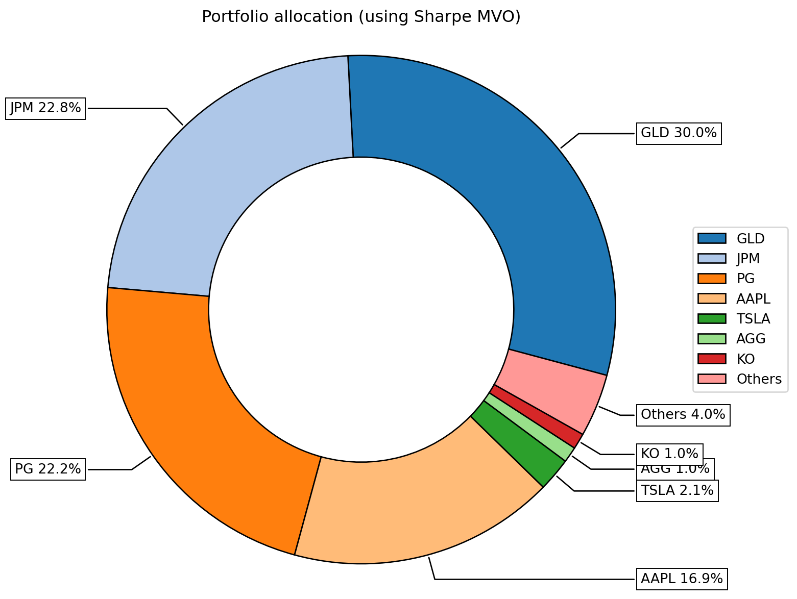

| Ticker | Name | Sector | |
|---|---|---|---|
| 0 | AAPL | Apple Inc. | Technology |
| 1 | MSFT | Microsoft Corp. | Technology |
| 2 | JNJ | Johnson & Johnson | Healthcare |
| 3 | XOM | \tExxon Mobil Corp. | Energy |
| 4 | PG | Procter & Gamble | Consumer Goods |
| 5 | JPM | JPMorgan Chase | Financials |
| 6 | TSLA | Tesla Inc. | Automotive/Tech |
| 7 | KO | Coca-Cola Co. | Consumer Staples |
| 8 | GLD | \tSPDR Gold Shares ETF | Gold |
| 9 | VNQ | Vanguard Real Estate ETF | Real Estate (REITs) |
| 10 | AGG | \tiShares Core U.S. Aggregate Bond ETF | Bonds |
Investment Portfolio Optimization in Python
A tutorial on how to do Mean Variance Optimization in Python
Eggs in a Basket: Why Diversify?
As the saying goes, “Don’t put all your eggs in one basket”. Diversification is a cornerstone of investing, designed to protect portfolios from market volatility and unforeseen events. However, diversification raises an important question: how should money be allocated across individual investments?
For those with a background in data science or finance, leveraging analytical techniques can provide an edge in taking control of your investments. A systematic approach to portfolio allocation is key to staying disciplined and removing emotions from the decision-making process. Thanks to accessible Python libraries like Pandas, yfinance and Riskfolio-Lib, retail investors now have the tools to apply techniques used by wealth managers and financial institutions. In this tutorial, we’ll explore how to perform mean-variance optimization (MVO) in python to construct an efficient and optimal portfolio.
What is Mean-Variance Optimization (MVO)?
Before jumping into the code we should first get a high level understanding of MVO. Mean-Variance Optimization (MVO), introduced by Harry Markowitz in 1952, plays a critical role in portfolio management by providing a systematic framework for balancing risk and return. MVO helps investors construct a portfolio that maximizes expected return for a given level of risk. Simply put, MVO is a great tool that helps investors efficiently achieve diversification such that they don’t put all their eggs in one basket.
Background
I’m Jason Lee, a Chartered Financial Analyst (CFA) with over five years of experience in the financial industry. Currently, I’m pursuing a Master of Data Science at the University of British Columbia to strengthen my technical skillset and complement my finance background.
This tutorial is not financial advice, nor am I a financial advisor. Instead, my goal is to share a practical framework for applying data-driven techniques to portfolio optimization. Keep in mind that all investing involves risk, so approach these concepts with caution.
Workflow
- Problem Definition: Allocating Investments Efficiently
- Imports
- Data Collection: Retreiving data from yfinance (Yahoo finance)
- Portfolio Construction: Using Riskfolio-Lib to create efficient portfolios
- Visualization: Displaying results through efficient frontiers and allocation breakdowns
0. Problem Definition: Allocating Investments Efficiently
Investing involves more than just selecting stocks—it’s about determining the right mix of investments to achieve your financial goals while managing risk. This balance is hard to acheive because:
- Trade-Off Between Risk and Return: Investors want to maximize returns, but doing so often increases exposure to risk.
- Complex Interactions: The performance of assets is rarely independent. Correlations between assets can amplify or reduce portfolio risk.
- Allocation Decisions: Determining how much money to allocate to each asset in a way that achieves an efficient trade-off between risk and return is not always intuitive.
To illustrate the concept of diversification and optimal allocation, we’ll use a sample portfolio. This portfolio includes a diverse mix of stocks, gold, real estate, and bonds to represent different asset classes.
1. Imports
import pandas as pd
import riskfolio as rp
import yfinance as yf
import matplotlib.pyplot as plt2. Data Collection: Retreiving data from yfinance (Yahoo finance)
To apply Mean-Variance Optimization (MVO) effectively, we first need to gather historical price data for the assets in our sample portfolio. We can do this using the yfinance library. While its data coverage may not match that of premium providers, yfinance is an excellent free resource for beginners learning quantitative finance concepts.
Steps:
- Define the investment universe: Specify the list of assets in the portfolio and assign them to the
tickersvariable. - Extract Historical Prices: Use
yf.download()to extract daily historical asset prices and store them in thedatavariable as a Pandas DataFrame. We’ll subset the dataset to retreive only theCloseprice. - Calculate Daily Returns: Using the
pct_change()function, we’ll compute the daily percentage returns for each asset, which are required for MVO. These returns will be stored in thereturnsDataFrame.
Note:
- For this tutorial, we are using a 1 year time period (Jan 2024 - Jan 2025) to ensure that the portfolio reflects recent market trends and conditions.
- Daily returns provide a granular view of asset behavior, which is well suited for portfolio optimisation.
# Define tickers
tickers = ['AAPL', 'MSFT', 'JNJ', 'XOM', 'PG', 'JPM', 'TSLA', 'KO', 'GLD', 'VNQ', 'AGG']
# Download historical price data
data = yf.download(tickers, start="2024-01-01", end="2025-01-01")['Close']
# Calculate daily returns
returns = data.pct_change().dropna()
returns.head()[ 0% ][ 0% ][************* 27% ] 3 of 11 completed[***************** 36% ] 4 of 11 completed[**********************45% ] 5 of 11 completed[**********************45% ] 5 of 11 completed[**********************64%****** ] 7 of 11 completed[**********************73%********** ] 8 of 11 completed[**********************82%************** ] 9 of 11 completed[**********************91%******************* ] 10 of 11 completed[*********************100%***********************] 11 of 11 completed| Ticker | AAPL | AGG | GLD | JNJ | JPM | KO | MSFT | PG | TSLA | VNQ | XOM |
|---|---|---|---|---|---|---|---|---|---|---|---|
| Date | |||||||||||
| 2024-01-03 | -0.007488 | 0.000506 | -0.008337 | 0.006251 | -0.004358 | 0.002340 | -0.000728 | -0.006051 | -0.040134 | -0.023900 | 0.008402 |
| 2024-01-04 | -0.012700 | -0.004048 | 0.001005 | -0.002112 | 0.006636 | -0.003336 | -0.007178 | 0.005479 | -0.002181 | -0.001839 | -0.008719 |
| 2024-01-05 | -0.004013 | -0.002337 | 0.000158 | 0.003113 | 0.005017 | -0.001506 | -0.000516 | -0.008274 | -0.001849 | -0.002534 | 0.003030 |
| 2024-01-08 | 0.024175 | 0.003768 | -0.007816 | 0.002482 | -0.001451 | 0.007374 | 0.018872 | 0.008615 | 0.012464 | 0.014317 | -0.016662 |
| 2024-01-09 | -0.002263 | -0.000203 | 0.000319 | 0.000619 | -0.007906 | -0.001830 | 0.002936 | 0.004103 | -0.022832 | -0.006716 | -0.012386 |
3. Portfolio Construction using MVO
With the returns DataFrame ready, we can now construct an optimal portfolio using Riskfolio-Lib. Mean-Variance Optimization (MVO) is a mathematical framework that solves for the portfolio allocation offering the highest expected return for a given level of risk.
Steps:
- Create a Portfolio Object: Start by creating a portfolio object from Riskfolio-Lib. This object takes the
returnsDataFrame as an input. - Config Estimation Methods: Since the returns dataframe is sourced from historical price data, we configure both mean and covariance estimation methods to use historical statistics.
- Set model parameters:
- model=
Classic: Refers to classical Mean-Variance Optimization (MVO) - rm=
MV: Risk measure set to variance (Minimizing Variance) - obj=
Sharpe: Optimization objective set to maximize the Sharpe Ratio (risk-adjusted return) - hist = True: Use historical scenarios for risk measures that depend on scenarios
- annual_rf= 0.0312: The Annual risk-free rate in Canada (2024 - 2025)
- daily_rf : Annual risk-free rate converted to daily risk-free rate
- model=
- Set Constraints:
- Constraints ensure the portfolio remains diversified and avoids overconcentration in specific assets.
- Maximum Position Size: In this portfolio, I set a constraint where no single asset can exceed 30% of the portfolio allocation.
- Minimum Position Size: In this portfolio, I set a constraint where no single asset can be below 1% of the portfolio allocation. This is to ensure that all assets get some allocation.
- Get optimal portfolio weights:
- The port.optimization method in Riskfolio-Lib uses a mathematical optimization library called
CVXPYto return the optimal portfolio weights. - This is a convex optimization problem, meaning it is computationally efficient and guarantees a global optimum.
- The port.optimization method in Riskfolio-Lib uses a mathematical optimization library called
pd.options.display.float_format = '{:.2f}'.format
# Create Portfolio Object
port = rp.Portfolio(returns=returns)
# Set the estimation methods for expected returns and covariance
method_mu = "hist"
method_cov = "hist"
# Update the portfolio object to use these methods
port.assets_stats(method_mu=method_mu, method_cov=method_cov)
# Estimate optimal portfolio:
model='Classic'
rm = 'MV' # Risk measure used - variance
obj = 'Sharpe' # Objective function
hist = True # Use historical scenarios for risk measures that depend on scenarios
annual_rf = 0.0312 # Annual risk-free rate
daily_rf = (1 + annual_rf) ** (1/252) - 1 # Convert to daily risk-free rate
# Set Constraints
asset_classes = pd.read_excel("../data/portfolio_opt.xlsb", sheet_name=1)
constraints = pd.read_excel("../data/portfolio_opt.xlsb", sheet_name=2)
A, B = rp.assets_constraints(constraints, asset_classes)
port.ainequality = A
port.binequality = B
# mean-variance optimization framework
w = port.optimization(model=model,
rm=rm,
obj=obj,
rf=daily_rf,
hist=hist)
# Display Weights
print(w) weights
AAPL 0.17
AGG 0.01
GLD 0.30
JNJ 0.01
JPM 0.23
KO 0.01
MSFT 0.01
PG 0.22
TSLA 0.02
VNQ 0.01
XOM 0.014. Visualization: Displaying results through allocation breakdowns and efficient frontiers
Visualization is a key step in understanding and communicating the outcome of portfolio optimization. In this section, I’ll introduce some of the built in visualisations that Riskfolio-Lib has to help us understand our optimal portfolio. These visuals help illustrate the practical implications of MVO.
Visualising Portfolio Weights
- We can visualise the portfolio weights (
w) using a donut chart - Riskfolio-Lib has a built in method called rp.plot_pie() that does this for us.
Key Observations:
The portfolio has made sizable allocations to the following assets:
- GLD (30%): Gold plays a significant role in the portfolio due to its diversification benefits. Its returns has lower correlations to those of stocks. This helps reduce overall portfolio risk and makes it an attractive choice for stability.
- Proctor & Gamble (22.2%): A stable, defensive consumer goods stock.
- JP Morgan (22.8%): Exposure to the financial sector.
- Apple (16.9%): Exposure to the technology sector.
# Plot the portfolio weights determined by MVO
ax = rp.plot_pie(w=w, title='Portfolio allocation (using Sharpe MVO)')
Visualising Risk Contribution
- We can also assess the portfolio’s risk contribution per asset
- Riskfolio-Lib has a built in method called rp.plot_risk_con() that creates a bar chart.
- Risk contribution provides insight into whether the portfolio’s risk is diversified or concentrated in specific assets.
# Plot the risk contributions of each stock
ax = rp.plot_risk_con(
w,
cov=port.cov, #Portfolio's covariance matrix
returns=port.returns, #Portfolio returns
rm="MV", # Risk measure used - variance
rf=daily_rf
)Visualising The Efficient Frontier
- The Efficient Frontier is arguably the most instructive visualization in Mean-Variance Optimization.
- It represents the set of portfolios that offer the highest expected return for a given level of risk.
- Each point along the efficient frontier corresponds to a portfolio optimized for a specific target return or level of risk, demonstrating the trade-off between risk and return.
- In the EF below, the optimal portfolio (‘w’), which maximises the sharpe ratio, is marked with a red star.
Steps:
- Create the points of the frontier: Use the port.efficient_frontier() method. This method calculates a range of portfolios by varying the risk or return targets, ensuring the results span the entire efficient frontier.
- Visualise the efficient frontier: Use the rp.plot_frontier() method to plot the efficient frontier and highlight the optimal portfolio.
#Create the points of the frontier
points = 50 # Number of points of the frontier
frontier = port.efficient_frontier(model=model, rm=rm, points=points, rf=daily_rf, hist=hist)
# Plotting the efficient frontier
label = 'Max Risk Adjusted Return Portfolio' # Title of optimal portfolio
mu = port.mu # Expected return of portfolio
cov = port.cov # Covariance matrix
returns = port.returns # Returns of the assets
ax = rp.plot_frontier(w_frontier=frontier, mu=mu, cov=cov, returns=port.returns, rm=rm,
rf=daily_rf, alpha=0.05, cmap='viridis', w=w, label=label,
marker='*', s=16, c='r', height=6, width=10, ax=None)Takeaways
In this tutorial, we explored how to construct an optimal portfolio using Mean-Variance Optimization (MVO) with Riskfolio-Lib. By following a systematic approach, we successfully applied MVO for portfolio management. Here are some key takeaways:
Diversification is Key: The principle of “not putting all your eggs in one basket” is at the core of portfolio optimization. MVO helps ensure that portfolios are well-diversified across assets, reducing the impact of individual asset volatility.
Systematic Allocation: MVO uses mathematical optimization to take emotions out of investment decisions, allocating capital in a way that balances risk and return efficiently.
Efficient Frontier Insights: The efficient frontier visualizes the trade-off between risk and return, offering a roadmap for constructing portfolios that align with an investor’s risk tolerance and return expectations.
Constraints Matter: Constraints like maximum position sizes (e.g., no more than 30% in one asset) and minimum allocations (e.g., at least 1% per asset) play an important role in making portfolios realistic and implementable.
How Often Should You Run MVO?: It depends. But I offer three reasonable suggestions.
- Annually: For most retail investors, running MVO once a year strikes a good balance between maintaining an optimal allocation and minimizing transaction costs.
- Semi-Annually or Quarterly: In volatile markets or for portfolios with high turnover, rebalancing more frequently can help align the portfolio with changing market dynamics.
- Threshold-Based Rebalancing: Alternatively, rebalance only when allocations deviate significantly (e.g. by more than 5% from the target weights).
References
- yfinance Documentation: https://pypi.org/project/yfinance/
- Riskfolio-Lib Documentation: https://riskfolio-lib.readthedocs.io/en/latest/
- Markowitz, H. (1952). Portfolio Selection. The Journal of Finance, 7(1), 77–91. JSTOR
- Canadian 3-Month Treasury Bill Yield: https://ycharts.com/indicators/canada_3_month_treasury_bill_yield
- Bodie, Z., Kane, A., & Marcus, A. J. (2020). Investments (12th ed.). McGraw-Hill Education.